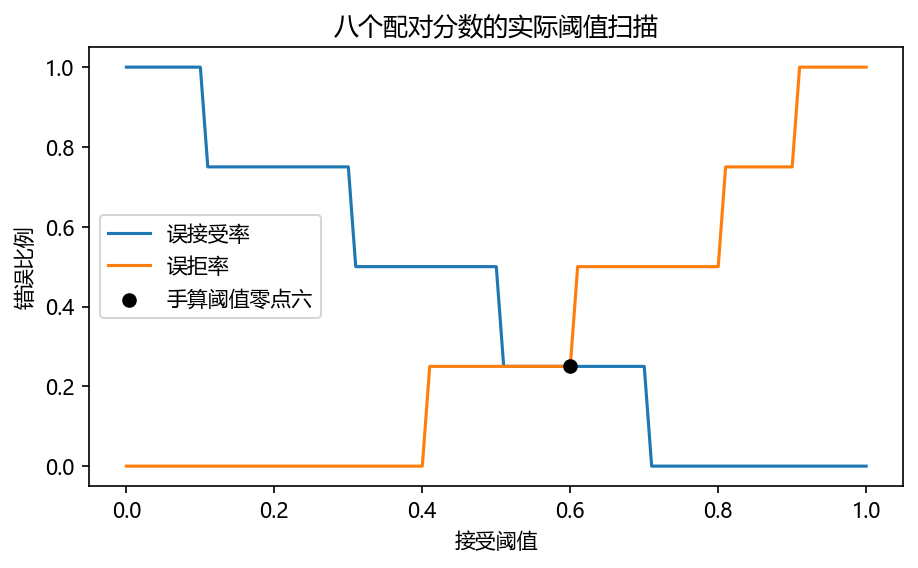
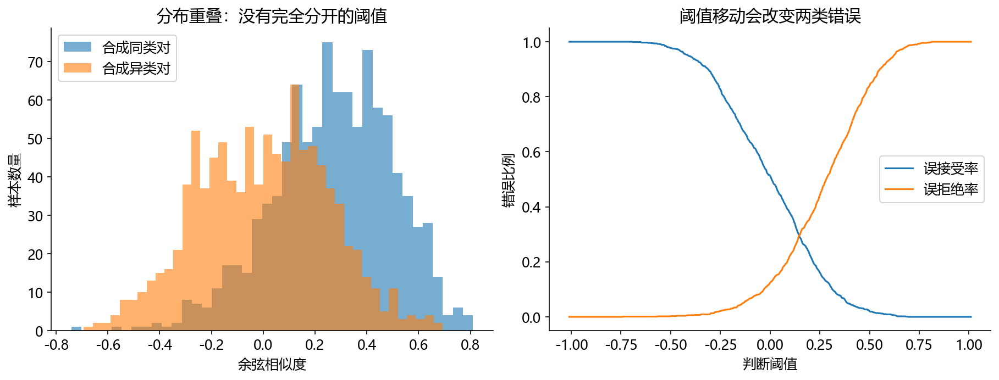

看图理解 · 跟着推演 · 对照真实结果
第15课 · 声纹分数到决策：阈值、误接受与误拒绝
先建立直觉，再逐节讲原理、代码与结果；章节目录可定位学习。用八个配对分数画出阈值曲线，理解声纹、日志和声音事件的边界。
从直觉、原理，到代码与结果
本版保留导览小实验，增加教材逐节精讲、代码分段阅读和结果解释。三个项目另有本次真实模型短推理，第 12 课增加实际训练曲线。按右侧小节分次学习即可，不必一次看完。
完整文字、规范公式和注释代码仍在上方“读完整图文”。视频中的历史报告、教学算例与本次实测分别标明，短演示不冒充完整重训或设备验收。
先修：向量内积、数组与简单比例；不需要声纹模型。
- 手算余弦相似度
- 用正确分母计算 FAR 和 FRR
- 区分声纹验证、说话人日志与分离
本课覆盖清单与证据范围
- 1. 先把这些经常混用的任务分开
- 2. 声纹向量是什么：一张压缩的声音特征卡
- 3. 手算余弦分数，再写第一段声纹评分代码
- 4. 阈值不是越高越好：手算 FAR、FRR 和 EER
- 5. 说话人日志：每个时间片应该贴谁的标签
- 6. 声音事件检测：为什么不能强迫所有类别概率加起来等于 1
- 7. 常见失败，不一定需要换模型
- 8. 练习答案与就业产物
结果从哪里来
- 导览中的小算例实际执行
- 原教材逐节讲解；正文代码/公式/图保留
八个分数是教学输入，曲线不是声纹模型实测；没有运行真实 diarization 或事件检测模型。
新版视频时间轴已改变，单独记录续播位置；学习计划的完成勾选保持不变。
跟着运行：注释代码、实际输出与结果图
下面代码在生成本站时实际执行。这里只是教学小实验，不是完整模型训练或业务设备测评。
import numpy as np
# 分数来自教学例子，不是声纹模型实测
same = np.array([0.9, 0.8, 0.6, 0.4])
different = np.array([0.7, 0.5, 0.3, 0.1])
threshold = np.linspace(0, 1, 101)
# 分数大于等于阈值，接受为同人
far = (different[None, :] >= threshold[:, None]).mean(axis=1)
frr = (same[None, :] < threshold[:, None]).mean(axis=1)
for value in [0.6, 0.8]:
a = np.mean(different >= value)
r = np.mean(same < value)
print("阈值", value, "FAR", a, "FRR", r)
assert np.isclose(np.mean(different >= 0.6), 0.25)
本次实际输出
阈值 0.6 FAR 0.25 FRR 0.25 阈值 0.8 FAR 0.0 FRR 0.5

精讲中的代码、运行步骤与大图
代码片段用于逐行理解；真实运行结果仅限明确标注“本次实际”的部分。教材历史图保留原有实验范围。
代码精读 03 · 第1–14行
源码精读 / 教学片段，需配套环境与上下文，不等同于独立脚本。
from math import sqrt
def cosine(a, b):
if len(a) != len(b):
raise ValueError("两段嵌入维度必须相同")
norm_a = sqrt(sum(x*x for x in a)) # 第一个向量的长度
norm_b = sqrt(sum(x*x for x in b)) # 第二个向量的长度
if norm_a == 0 or norm_b == 0:
raise ValueError("零向量不能作为有效声纹")
dot = sum(x*y for x, y in zip(a, b)) # 相同维度逐个相乘再相加
return dot / (norm_a * norm_b)
print(cosine([1, 0], [0.8, 0.6])) # 0.8
print(cosine([1, 0], [8, 6])) # 0.8代码精读 04 · 第1–18行
源码精读 / 教学片段，需配套环境与上下文，不等同于独立脚本。
same = [0.9, 0.8, 0.6, 0.4] # 已知同人的配对分数
different = [0.7, 0.5, 0.3, 0.1] # 已知异人的配对分数
for threshold in [0.6, 0.8]:
false_accept = sum(s >= threshold for s in different)
false_reject = sum(s < threshold for s in same)
far = false_accept / len(different) # 分母只能是异人对数量
frr = false_reject / len(same) # 分母只能是同人对数量
print(threshold, far, frr)
# 预期：0.6 0.25 0.25；0.8 0.0 0.5
# 每个阈值都重新统计误接受和误拒绝，有限样本自然形成阶梯曲线。
from pathlib import Path
import matplotlib
matplotlib.use("Agg")
import matplotlib.pyplot as plt
plt.rcParams.update({"font.family": "Microsoft YaHei", "axes.unicode_minus": False})
thresholds = [i/100 for i in range(101)]
fars = [sum(s >= t for s in different)/len(different) for t in thresholds]代码精读 04 · 第19–28行
源码精读 / 教学片段，需配套环境与上下文，不等同于独立脚本。
frrs = [sum(s < t for s in same)/len(same) for t in thresholds]
fig, ax = plt.subplots(figsize=(7, 3.8))
ax.plot(thresholds, fars, label="误接受率")
ax.plot(thresholds, frrs, label="误拒率")
ax.scatter([0.6], [0.25], color="black", zorder=3, label="手算阈值零点六")
ax.set(xlabel="接受阈值", ylabel="错误比例", title="八个配对分数的实际阈值扫描")
ax.legend()
Path("tutorial/figures").mkdir(parents=True, exist_ok=True)
fig.savefig("tutorial/figures/ch15_threshold.png", dpi=150, bbox_inches="tight")
plt.close(fig)结果读图 04 · 4. 阈值不是越高越好：手算 FAR、F
原教材运行记录

原教材已存图 不是本次新测 先确认实验范围 再解释坐标与单位
结果读图 04 · 4. 阈值不是越高越好：手算 FAR、F
原教材运行记录

原教材已存图 不是本次新测 先确认实验范围 再解释坐标与单位
闭卷自测：阈值从 0.6 提到 0.8，本例 FAR 和 FRR 怎么变？
FAR 从 1/4 降至 0；FRR 从 1/4 升至 2/4。提高阈值降低误接受，但增加误拒绝。
逐字讲稿 · 可定位回看
门禁系统既怕把陌生人放进来，也怕把本人挡在外面。这两种错误不能只用“准确率很高”一句话带过。下面的数值只是阈值练习，不是某个模型的推荐设置。
假设一对同人录音得分 0.82，一对异人录音得分 0.78；规则是分数不小于阈值就接受。 阈值设为 0.80，两对在这个小例子中都判断正确；设为 0.85，同人也会被拒绝。
阈值降到 0.75，异人也被接受了。真实阈值要在足够多的开发数据上选择，不能只看这两个样本。 余弦相似度 0.8 不等于“有 80% 概率是本人”。即便数值位于 0 到 1，也不自动具有概率含义。
假设会议有两个人轮流说话，还有一段重叠。识别器给你文字，声纹验证比较两段是否同一个人，日志给每段时间贴人物标签，分离则尝试拆出各自的声音。
这些任务能一起用，但不能互相冒充。识别出我是张三，不等于验证说话人真是张三；日志标签 A 也只是聚类编号，不自动对应现实姓名。
我们先抓最小决策：给两段声音一个相似分数，然后决定接不接受为同人。用四个同人分数和四个异人分数，就能亲手看到阈值的代价。
声纹编码器把长短不一的语音变成固定维向量，通常叫嵌入。可以把它想成一张特征卡，但这张卡不是绝对不变的身份证号码。
同一个人换麦克风、换语言、轻声说话或只录很短一段，得到的向量都可能变化。静音很多时，聚合的内容甚至主要是背景，而不是稳定发声特征。
因此评分前要检查输入质量，并分别看长短录音、同设备和跨设备。把所有情况混成一个平均分，会遮住真正影响实际使用的失败条件。
取 a 等于一和零，b 等于零点八和零点六。两者长度都是一，内积是一乘零点八加零乘零点六，所以余弦相似度是零点八。
如果把 b 放大十倍，变成八和六，内积变成八，长度变成十，相除仍然是零点八。这说明余弦忽略整体尺度，但不说明它能自动抵抗噪声。
分数零点八只是这个评分规则下的相似程度。没有额外校准和适用条件，就不能念成同人的概率百分之八十；零向量还需要作为异常单独处理。
我们规定分数大于等于阈值就接受。阈值零点六时，同人四对中只有零点四被拒绝，因此误拒绝一对，除以四个同人对，得到百分之二十五。
异人四对中只有零点七被接受，因此误接受一对，除以四个异人对，也得到百分之二十五。注意两个分母分别对应两种真值，不能都除以总共八对。
如果业务特别不能容忍冒认，可以提高阈值，但这不是免费改善。阈值零点八时异人都被拒绝，误接受为零；同人零点六和零点四都被拒，误拒升到一半。
误接受率的英文缩写是 FAR，误拒率是 FRR。随着接受条件更严格，异人更难混进来，但真正同人的低分录音也更容易被挡在外面。
本例两者在零点六时都为百分之二十五，这个工作点可以说明等错误率的概念。真实有限样本不一定恰好相等，需要说明近似或插值规则。
上线固定阈值应该按开发集和业务代价选择，然后在独立测试上报告结果。测试集扫描得到 EER 是指标计算，但不能把事后最佳阈值说成上线前已经确定。
先把同人、异人的四个分数分别存成一维数组。阈值从零到一取一百零一个位置，每个阈值都要重新检查四对，不能只改变图上的标注。
新增维度后，四个分数和一百零一个阈值广播为一百零一行四列。每行对应一个阈值，每列对应一个配对，比较结果是真或假。
沿每行求平均，就把真视为一、假视为零，得到错误比例。异人使用大于等于，同人误拒使用小于，两个边界必须与接受规则保持一致。
看横轴阈值从左向右增加，误接受整体下降，误拒整体上升。打印阈值零点六得到两个零点二五，阈值零点八得到零和零点五，与刚才手算一致。
曲线呈阶梯是正常的。每类只有四个配对，增加或减少一处错误就改变二十五个百分点，画得再平滑也不会凭空增加测量精度。
这些分数是人为给定教学数据，不是真实声纹成绩。想评价模型，需要有授权录音、配对规则、独立划分和足够样本，还应对不同设备条件分别报告。
会议日志先找有人说话的区间，再切片、提取嵌入、聚类并回填时间线。切片跨过换人边界，向量就可能混人；切得太短，又可能没有足够稳定信息。
设真实 A 说零到四秒，B 说四到十秒。预测 A 到五秒、B 到九秒，就有一秒说话人混淆，以及最后一秒语音漏掉。无重叠无容差时，错误两秒除十秒为百分之二十。
若系统把 A 和 B 的编号全部交换，不应直接判全部错误，需要按协议做一致标签映射。是否计重叠、边界容差多大，也必须固定，不能混着比较 DER。
录音里可以同时有人讲话和狗叫，因此事件标签可能两个都为真。若强迫所有类别通过一个互斥选择竞争，就会错误地要求只能留下其中一个。
常见多标签系统对每类分别打分，并评价时间边界。整段分类说这段有狗叫，不等于已经准确找到狗叫的起止秒数，定位任务需要单独的指标协议。
背景时间很多时，即使一直预测没有事件，逐帧准确率也可能很高。应同时看短事件召回、误报、各类分组，不要只展示一个很好看的整体准确率。
一千个异人配对中，五个被接受，误接受率是多少？五除以一千是零点零零五，也就是百分之零点五。不要因为测试里还有同人对就换分母。
如果阈值提高后误接受变少，而误拒变多，这是不是算法坏了？不一定，这首先是工作点的正常取舍。要判断模型进步，需要同样协议下比较整组表现。
你的作业是改一个同人分数，预测曲线哪个区间会变化，再运行核对。最后用匿名标签整理两类失败案例，说明数据权限，别把他人声音与真实身份随意公开。
同一个人的不同切片如果来自同一段录音，可能共享背景、设备和重叠样点。直接随机切片再分训练测试，会高估泛化。先定义要验证新会话、新设备还是新说话人，再按相应单位划分。
注册音频用于建立身份模板，测试音频用于比较。比较向量余弦分数不是直接输出身份概率，阈值也不应该在最终测试上挑到最好看。
开发集选定阈值后，冻结再报告误接受和误拒绝。安全应用通常更在意误接受，便利应用可能更在意误拒绝，不能只拿一个准确率替代业务取舍。
说话人验证回答两段是否同人，而说话人日志要标出每个时间区间是谁说话。它通常还涉及语音活动检测、切段、嵌入聚类和时间边界处理。
如果两人同时说话，强制每个时刻只给一个人会丢失信息。评测是否计重叠、是否允许边界容差，会影响DER等指标，必须和结果一起说明。
分离模型输出两路也不自动解决长期身份一致性。同一个人可能在不同块切换输出通道，需要额外的匹配与状态管理。不要把音频任务的输入输出混为一谈。
声纹验证问“两段录音是否来自同一人”；说话人辨认问“在已有候选人中最像谁”；说话人日志（diarization）问“谁在什么时间讲话”。日志常用 A、B、C 这样的匿名标签，不自动知道真实姓名。
语音分离又不同：它试图把混合录音拆成各个声源的波形。日志输出时间与标签，分离输出声音，二者可互相辅助，却不能当同一个任务。ASR 输出讲话内容，“我是张三”这句转写本身也不能证明说话人的身份。
声音事件检测则关心“此时有狗叫、门铃、碰撞还是发动机声”。整段分类只说录音里有什么；事件检测还需要起止时间。同一时刻可能一边有人讲话、一边有狗叫，所以很多事件任务是多标签的。
声纹编码器把长短不一的语音转换为固定维向量，常称 embedding。可以把它想成“比较声音时使用的特征卡”，但不是人类身份的密码：同一个人的设备、语气、语言、噪声和录音长度变化，都可能改变向量；不同人的向量也可能很接近。
编码器通常先提取逐帧特征，再聚合为片段级表示。简单平均池化平均各帧；统计池化还能利用均值与变化程度；注意力池化给不同帧不同权重。短录音提供的信息少，静音或噪声占比高时，得分往往更不稳定。
最常见的比较起点之一是余弦相似度：两个向量的内积，除以各自长度。它比较方向，而不是简单比较幅度大小。分数越大通常表示越相似，但分数 0.8 不是“有 80% 概率同一个人”，除非专门做了概率校准并说明适用分布。
取向量 a=[1,0]、b=[0.8,0.6]。两者长度都是 1，内积为 1乘0.8+0乘0.6=0.8，所以余弦为 0.8。把 b 放大十倍得到 [8,6]，内积变成 8、长度变成 10，最终分数仍是 0.8。
这个性质说明它不直接受整体尺度影响，但并不说明它对噪声或设备变化天然免疫。下面用标准库实现，不需要下载任何声纹模型。
实际模型可能输出几百维，但这段评分的思想不变。零向量不应该默默当作正常身份特征；应先查是否输入静音、特征失败或模型输出异常，并记录失败原因。
先看中文注释：第一个向量的长度。这几行仍属于3. 手算余弦分数，再写第一段声纹评分代码的同一处理链，输入变量沿用前一段，不是一个独立程序。
先看中文注释：第二个向量的长度；相同维度逐个相乘再相加。这几行仍属于3. 手算余弦分数，再写第一段声纹评分代码的同一处理链，输入变量沿用前一段，不是一个独立程序。
先看中文注释：0.8；0.8。打印是观测点。把这里的真实值与理论预期比较，若不一致应保留输出排错，而不是手工改成期望数字。
假设开发集有四个“同一人”配对，分数为 [0.9,0.8,0.6,0.4]；四个“不同人”配对，分数为 [0.7,0.5,0.3,0.1]。规定分数大于等于阈值就接受为同人。
阈值取 0.6 时，同人对中的 0.4 被误拒绝，FRR（误拒率）为 （1）除以（4）=25 ；异人对中的 0.7 被误接受，FAR（误接受率）也为 25%。在这个玩具例子上两者相等，这个工作点对应 25% EER。
阈值提高到 0.8 后，没有异人被接受，所以 FAR 为 0；但两个同人对被拒绝，FRR 升到 50%。降低一个错误率往往会抬高另一个。业务若对冒认很敏感，会选择更低 FAR 的工作点；这不等于模型本身突然变差。
从课程根目录 audio-course-zh 运行下列代码，可得到八个配对分数对应的真实阈值曲线，图保存到 tutorial/figures/ch15_threshold.png。
这张小样本曲线不光滑是正常的：总共四个同人对或异人对，每错一个就变化 25 个百分点。别把它画得很平滑再误以为测量精确到小数点后三位。
图由已经运行的 run_experiments.py 使用另一组合成向量生成，不是上述八个分数的图。左图展示两类分数重叠；右图展示阈值变化时两类错误率的反向变化。该合成实验近似 EER 为 29.5%，只解释原理，不能作为真实声纹模型成绩。
现实曲线不一定刚好交于某个采样阈值，需要注明插值或近似规则。还要分清两件事：EER 是对一组带标签分数扫描阈值后得到的评价指标；上线时固定使用的接受阈值，应根据开发集和业务代价提前选择，再到测试集报告 FAR/FRR。
按规定计算测试集 EER 本身不等于“偷看测试调参”，但不能把测试集上找到的阈值再包装成预先确定的上线阈值。SpeechBrain 的 EER 接口同时返回 EER 和对应阈值，使用时要注明它们来自哪个数据集合。
也不要只报准确率：若异人对占 99%，永远拒绝都能拿到 99% 准确率，却没有验证价值。
先看中文注释：已知同人的配对分数；已知异人的配对分数；分母只能是异人对数量。这几行仍属于4. 阈值不是越高越好：手算 FAR、FRR 和 EER的同一处理链，输入变量沿用前一段，不是一个独立程序。
先看中文注释：分母只能是同人对数量；预期：0.6 0.25 0.25；0.8 0.0 0.5；每个阈值都重新统计误接受和误拒绝，有限样本自然形成阶梯曲线。。打印是观测点。把这里的真实值与理论预期比较，若不一致应保留输出排错，而不是手工改成期望数字。
绘图展示的是传入数组。核对横轴单位、图例与统一尺度后，才可以比较不同处理的变化。
绘图展示的是传入数组。核对横轴单位、图例与统一尺度后，才可以比较不同处理的变化。
绘图展示的是传入数组。核对横轴单位、图例与统一尺度后，才可以比较不同处理的变化。
绘图展示的是传入数组。核对横轴单位、图例与统一尺度后，才可以比较不同处理的变化。
先看这张随教材保存的图。上方代码实际运行结果：阈值 0.6 时 FAR 与 FRR 都为 25%。本次视频引用既有结果，不把它称为新运行。
横轴、纵轴、图例和单位决定图在回答什么问题。若曲线重合，先问它验证的是数值等价、形状还是算法质量。图像相似不自动证明真实业务效果相同。
把图中观察与本节假设联系起来，再回到前面的代码确认数组来源。合成信号实验、历史报告和真实模型输出属于不同证据范围，不能混成同一个成绩。
先看这张随教材保存的图。合成向量的分数分布和阈值曲线。本次视频引用既有结果，不把它称为新运行。
横轴、纵轴、图例和单位决定图在回答什么问题。若曲线重合，先问它验证的是数值等价、形状还是算法质量。图像相似不自动证明真实业务效果相同。
把图中观察与本节假设联系起来，再回到前面的代码确认数组来源。合成信号实验、历史报告和真实模型输出属于不同证据范围，不能混成同一个成绩。
常见学习流程是 VAD 找语音区间→切片→提取嵌入→聚类→回填时间线→处理短插话和重叠。VAD 漏掉的语音不会神奇地在后面恢复；切片跨越两个人，嵌入可能被混合；片段过短又可能缺少稳定身份信息。
聚类编号没有固有语义。系统把真实 A 标为“2”、真实 B 标为“1”，不一定错了，评价时通常先寻找合理的一致标签映射。不能直接用字符串标签是否相等来评分。
DER 常把漏检语音时间、误检语音时间、说话人混淆时间加起来，再除以参考说话人时间。先看无重叠、无边界容差的简单例子：真实 A 在 0—4 秒说话，B 在 4—10 秒说话；系统报 A 在 0—5 秒、B 在 5—9 秒。
真实会议有重叠讲话，评价时是否计入重叠、边界周围是否允许 collar 容差，会明显改变分数。collar 通常指从评价中排除参考边界附近的一小段时间，具体宽度定义以评测实现为准，不是随意把错误预测边界吸附到真值。重叠情况下参考说话人时间可能超过录音墙钟时间。
报告里必须写明协议，不能拿两套不同协议的 DER 直接比较。pyannote.metrics 官方说明可用于核对标签映射、评价区域和边界容差。
说话人日志也不自动等于“每句话都属于谁”的转写结果。ASR 的文字时间戳、日志边界和重叠语音需要进一步关联；在换人边界处分错，可能让整个句子的归属错误。
一段录音里同时有语音和狗叫，两类都应为真。单标签 softmax 倾向在互斥类别中竞争；多标签任务通常为每类分别输出 sigmoid 分数，并用逐类二元交叉熵等目标训练。具体是否互斥，应由标注定义，而不是照抄其他分类项目。
手算一个两类例子：真值是 [有狗叫=1,有门铃=0]，预测 [0.8,0.2]。两类的二元交叉熵分别为 -ln(0.8) 和 -ln(1-0.2)，都约 0.223，平均也约 0.223。若真值改为两个事件都有，第二类就会受到 -ln(0.2) 的更大惩罚。
检测还要确定时间边界。把逐帧分数超过阈值的片段连起来，是最基础的后处理；滞回、最短事件时长、合并短间隔可以稳定结果，但也可能吞掉短事件。评价要区分片段级、帧级和事件级，明确起止容差，不要用整段分类准确率冒充事件定位效果。 类别不平衡时，还要说明如何汇总。宏平均先分别计算各类别指标再平均，让少见事件也占一份权重；微平均先累计各类别的正确、误报与漏报数量，更受常见事件影响。两者回答的问题不同，没有一个数字适合所有用途。若你的数据大部分是背景声，单报逐帧准确率可能掩盖所有短促事件都漏掉的问题，应单独查看事件召回和误报。
失败现象：同人跨设备分数很低。可验证的原因：通道和噪声域变化。先做的小实验：按同设备/跨设备分组。
失败现象：两个人总被并到一起。可验证的原因：切片混人、嵌入不足、聚类阈值。先做的小实验：回听最相似的异人对。
失败现象：短插话经常消失。可验证的原因：VAD 最短时长、后处理合并。先做的小实验：单独评价短于一秒片段。
失败现象：背景电视被当参会者。可验证的原因：声源并未被业务定义区分。先做的小实验：增加电视声负例与标注规则。
失败现象：事件总在某设备上准。可验证的原因：学到设备背景而非事件。先做的小实验：按设备隔离测试。
你有水声背景，可以把“分组划分、弱目标检测、干扰分析”的经验迁移过来，但不能把水声类别模型直接写成说话人识别模型。迁移的是处理方法，输入分布、目标与评测仍要重新建立。
练习一：1000 个异人对中 5 个被接受，FAR 是多少？答案：0.5%；分母不是所有配对数。练习二：系统把所有 A/B 标签互换，应算所有时间都错吗？答案：不能直接这样算，应按日志评价协议先做一致标签映射。练习三：把重叠区域全部删掉后 DER 下降，能说模型提升吗？
答案：不能，那是评测条件改变，除非两版本都按相同新协议重评。
就业交付可以是一个小规模合法会议工具：保存录音编号、人工时间线、声纹配对分数、阈值选择依据、日志结果和错误回听清单；分别报告同设备/跨设备、长语音/短语音、重叠/非重叠条件。使用匿名标签，公开材料先脱敏，不把别人的声音和真实身份随意放到仓库。 本章要记住任务边界与 FAR/FRR 的分母；要能手算余弦和简单 DER；要能实现阈值扫描并解释一组失败案例。下一次复习不要只背 EER 缩写，拿出一张分数表，说明你为什么选择这个阈值、它会让哪一类用户付出代价。
适用边界与参考正文
八个分数是教学输入，曲线不是声纹模型实测；没有运行真实 diarization 或事件检测模型。
教学图与实验图由本站整理生成；项目代码、预训练模型和公开数据的来源见配套正文。旁白是本地中文语音合成，不是教师真人录音，也不是 NotebookLM 生成。没有向 Google 上传项目材料。